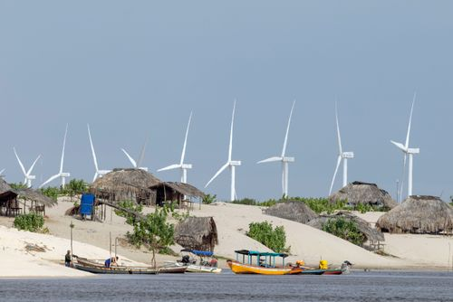
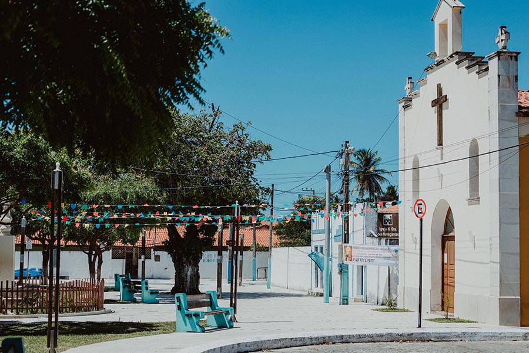
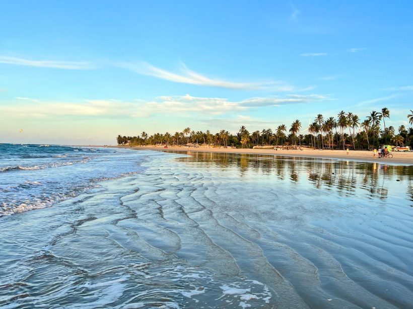

Bem vindo ao Icaraizinho de Amontada
Icaraízinho de Amontada é um paraíso escondido no litoral oeste do Ceará, conhecido por suas praias tranquilas, paisagens naturais e uma vibe acolhedora. Com sua brisa constante, o local é perfeito para quem deseja fugir do agito das grandes cidades e se conectar com a natureza. Seja para relaxar, praticar esportes aquáticos como kitesurf, ou explorar a rica cultura local, Icaraízinho é o destino ideal para quem busca uma experiência autêntica no nordeste brasileiro.


